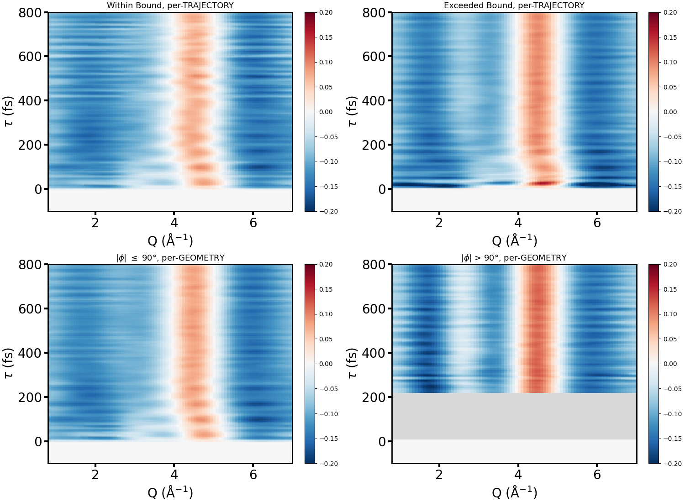

Theory Decomposition, Fully Time-Resolved

- Simulated $\Delta S(Q, \tau)$ out to 800 fs, split two ways: per-trajectory (whether a trajectory ever exceeded the isomerization bound, top) and per-geometry (instantaneous dihedral $|\phi|$ threshold, bottom)
- Both classification schemes agree on the dominant 4.5 Å$^{-1}$ feature, but only the exceeded-bound / $|\phi| > 90°$ component (right column) develops the extra shoulder near 2.5–3.5 Å$^{-1}$
- That shoulder is already visible by $\sim$100 fs and persists to 800 fs — it is a stable signature of the isomerized population, not a transient artifact